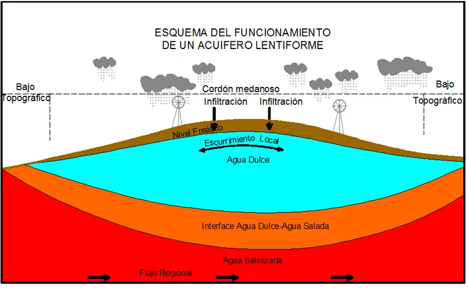

AcuÃferos
31 de octubre de 2023 – 20:05 | Por Jorge Mugni, hidrogeólogo para Contenidos CREA
Es bastante común escuchar hablar de “rÃo subterráneo†cuando se hace referencia al sitio de subsuelo del cual se extrae el agua. Pero es importante resaltar que eso no es asÃ: en el subsuelo no existen los “rÃos subterráneosâ€.
El agua subterránea se origina a partir de la infiltración del agua de lluvia; dicho fenómeno está vinculado al ciclo hidrológico, el cual está constituido por una sucesión de procesos que permiten que el agua llegue desde el mar hasta tierra firme a través de la atmósfera. Y, desde tierra firme, el agua retorna –con relativa demora– nuevamente al mar por vÃa superficial o subterránea y, en parte, también, a través de la atmósfera.
Tenemos entonces evaporación (en las masas oceánicas, lagos y rÃos), condensación, precipitación, escurrimiento superficial, infiltración y escurrimiento subterráneo.
Si se efectúa un balance hidrológico global, podrá concluirse de manera sintética que del agua precipitada alrededor de un 70 % se evapotranspira (este proceso incluye en forma conjunta al agua que se evapora en cuerpos superficiales y la que transpiran los vegetales), mientras que otro 10 % se convierte en escurrimiento superficial y el 20 % restante se infiltra.
Precisamente, el agua que se infiltra, luego de satisfacer la necesidad de humedad de la franja edáfica, prosigue su descenso como agua gravitacional y alcanza el nivel freático, convirtiéndose en recarga efectiva del agua subterránea. De esta manera se llega al concepto de acuÃfero, mediante el cual se hace referencia al conjunto agua-sedimento capaz de erogar caudales aprovechables por el hombre tanto en calidad como en cantidad.
Si bien generalmente se destaca como recurso hÃdrico estratégico al agua superficial –muchas veces a partir del efecto visual que provocan grandes rÃos o represas– es, sin embargo, el agua subterránea el recurso hÃdrico estratégico más importante. Basta señalar que más del 90 % de los centros urbanos de nuestro paÃs logran su aprovisionamiento del recurso a partir de la explotación de agua subterránea. Algo similar ocurre con la mayor parte de los emprendimientos agropecuarios.
En el subsuelo se pueden distinguir acuÃferos a diferentes profundidades: desde dónde aparece la “primera napa†(4 ó 6 metros) hasta la profundidad en la que yace el Basamento Cristalino (o “roca duraâ€). Asimismo, de acuerdo al grado de comunicación hidráulica que los acuÃferos tengan entre sÃ, se diferencian tres tipos principales: libres, semiconfinados y confinados.
En el territorio de la provincia de Buenos Aires pueden distinguirse distintos ambientes hidrológicos caracterizados por un determinado tipo de geomorfologÃa, drenaje superficial, geologÃa superficial e hidrogeologÃa. En este último aspecto, es posible hallar en el subsuelo provincial distintos tipos de acuÃferos que caracterizan a los distintos ambientes hidrológicos.
AcuÃferos en el ambiente noreste de Buenos Aires
De esta manera, en el ambiente Noreste de la provincia se presentan dos acuÃferos principales, separados por un nivel arcilloso, que limita –pero no impide– la vinculación hidráulica entre ambos: uno superior, de caracterÃstica libre y espesor promedio de 50 metros, y otro inferior, semiconfinado y con una potencia de unos 30 metros. Estos dos acuÃferos se desarrollan en la denominada zona núcleo maicera de la provincia (partidos de San Antonio de Areco, Carmen de Areco, Rojas, Salto, Chacabuco, Chivilcoy, Capitán Sarmiento, Pergamino, etcétera), constituyendo la principal fuente para el riego que se realiza en dicha región. Asimismo, estos acuÃferos de comportamiento mantiforme –ya que evidencian un espesor importante (80 metros), con una salinidad bastante uniforme y que cubren una gran extensión– también son empleados en este ambiente hidrológico como principal fuente de abastecimiento para las ciudades del conurbano bonaerense.

El comportamiento acuÃfero de tipo mantiforme (es decir, su espesor y calidad constante en una extensÃsima área) cambia cuando se cruza el RÃo Salado en dirección a la provincia de La Pampa. AsÃ, a partir de la localidad de Suipacha y hacia el oeste, los acuÃferos Pampeano (acuÃfero superior) y Puelche (acuÃfero inferior) se salinizan progresivamente. El desarrollo de estos dos acuÃferos puede evidenciarse al elaborar un perfil hidrogeológico entre el RÃo de la Plata y la localidad de Pehuajó.
En la siguiente figura se muestra dicho corte hidrogeológico, observándose en primer término al acuÃfero superior (AcuÃfero Pampeano), alojado en la formación homónima, conformada por limos arenosos, bastante carbonáticos, y que alcanzan espesores de entre 40 y 60 metros.

El comportamiento mantiforme de estos dos acuÃferos, es decir su espesor y calidad constante en una extensÃsima área, cambia cuando se cruza el rÃo Salado. AsÃ, a partir de la localidad de Suipacha y hacia el oeste, el acuÃfero Puelche se saliniza progresivamente. Algo similar ocurre con el acuÃfero Pampeano, el cual a partir de la localidad de Bragado deja de tener un comportamiento mantiforme para pasar a ser lentiforme. Este comportamiento acuÃfero está dado por la formación de lentes de agua dulce en las cuales el agua de menor salinidad flota sobre el agua salada.

A diferencia del otro tipo de acuÃfero (mantiforme), en este caso el agua evoluciona quÃmicamente de manera muy rápida. Por ello, es muy común que en distancias de un par de kilómetros se pase de un agua de 800 µS/cm (agua que puede calificarse como “agua mineralâ€) a 5000 µS/cm (agua salobre). Ello se debe al exiguo espesor que caracteriza a este tipo de acuÃfero, el cual va desde unos pocos metros (8 a 12 metros), promedia –a nivel del noroeste provincial– 30 metros y no sobrepasa 60 metros en los casos de desarrollo más conspicuo.
Por su parte, la extensión superficial de estos acuÃferos lentiformes puede ir desde unas pocas hectáreas (20 ha), sirviendo en esos casos para el abastecimiento de la casa y el tambo, hasta centenares o miles de hectáreas, empleándoselos en estas circunstancias para el abastecimiento público. Ejemplo de esto último lo conforman las lentes de Moctezuma (1000 ha), Mari Lauquen (2000 ha), Daireaux (3000 ha) y 9 de Julio (9000 ha), que se explotan para el abastecimiento a las localidades de Carlos Casares, Trenque Lauquen, Daireaux y 9 de Julio, respectivamente.
Nota: el presente artÃculo es propiedad de Contenidos CREA.
ArtÃculo original en Contenidos CREA